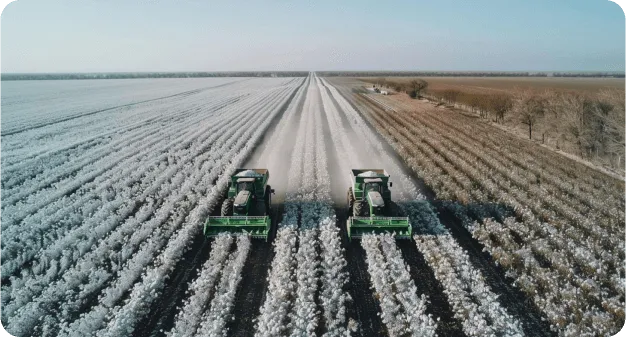
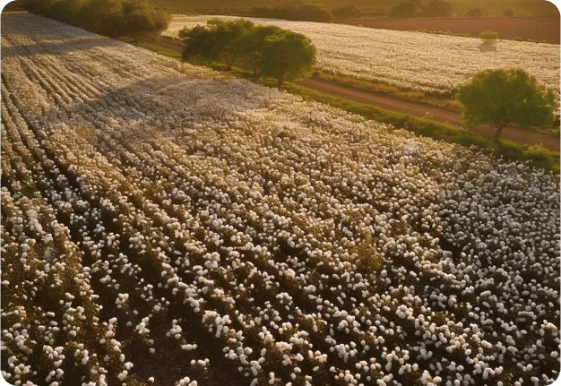
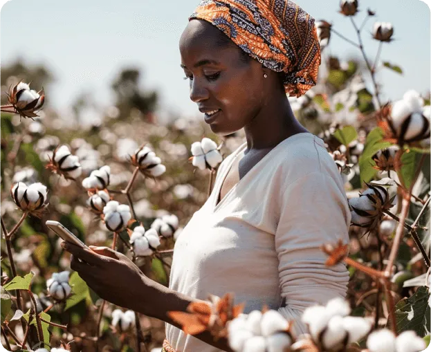
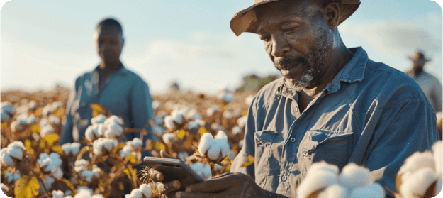

PROCESO
Seguimiento preciso de principio a fin
Identificación de activos y agentes
Genera confianza y seguridad a todas las partes involucradas.
Registro de parcelas georreferenciadas y asociadas a un agricultor con derecho de explotación.
Registro de agricultores con datos de identificación, localización y contacto.
Registro de proveedores con datos de identificación, localización y contacto.
Planificación y programación de cultivos
Mejora la toma de decisiones y mitiga los riesgos operativos.
Planificación georreferenciada para mejorar la gestión de cultivos.
Programación de actividades según las necesidades de producción.
Mapeo de campos y gestión de zonas según las necesidades específicas.
Geolocalización para optimizar la irrigación y zonificación de las plantaciones.
Control y gestión de la producción
Maximiza la eficiencia y calidad de la producción agroindustrial.
Monitorización de cultivos con drones y/o satélites para la detección de anomalías y diagnósticos en tiempo real.
Asistencia técnica virtual en tiempo real mediante IA.
Integración de datos de pesaje y rendimiento para detectar discrepancias y posibles problemas.
Digitalización de pruebas de laboratorio para informar sobre la calidad y mejorar la toma de decisiones.
Captura en tiempo real de procesos de desmotado.
Logística y estocaje
Optimiza la gestión de pedidos y entregas agrícolas.
Trazabilidad a tiempo real desde el campo hasta el almacén con RFID o códigos QR.
Gestión digitalizada de almacenes, optimizando el espacio y agilizando procesos.
Puntos de reorden automático manteniendo la continuidad del negocio sin interrupciones.
Monitoreo de humedad con el uso de sensores en el almacén.
Venta directa y transparente
Evita intermediarios y facilita las relaciones comerciales.
Acceso directo al mercado facilitando la comunicación entre los agricultores y sus compradores.
Integración de e-commerce para facilitar la comercialización y el libre mercado.
Integración de servicios financieros permitiendo el acceso a créditos o préstamos.
Disponibilidad de un espacio para la gestión y resolución de disputas con datos documentados como evidencia.
BENEFICIOS
Una oportunidad única
Eleva tu productividad y rentabilidad
Pioneros en un mercado en desarrollo
Con un mercado aún en desarrollo y un gran potencial agrícola, invertir en Almaagro es ser pionero en el crecimiento de un sector con un enorme potencial de retorno.
Agricultura sostenible
Almaagro está posicionada para satisfacer las necesidades emergentes y capturar una parte significativa del mercado mediante una inversión rentable.
Fusión de tradición y vanguardia
La plataforma converge la tradición agrícola y la tecnología más avanzada utilizando herramientas punteras de la agricultura 4.0 como la IA y otras ajustadas a la realidad contextual del continente africano.
Una inversión rentable
Almaagro impulsa el desarrollo sostenible al facilitar la transición hacia prácticas agrícolas más eficientes por medio de la digitalización.
CARACTERÍSTICAS
Una solución innovadora
Inversión sostenible con tecnología adaptada para una agricultura sostenible y eficiente.
Flexibilidad y escalabilidad
Permite adaptarse a las necesidades cambiantes del sector agrícola.
Integración y personalización
El uso de APIs facilita la integración con otras aplicaciones y servicios.
Acceso sencillo y sin barreras
Combinación de Inteligencia Artificial con tecnología USSD, destinada a áreas sin concexión de datos.
Diseño modular
Facilita la integración continua de innovaciones y mejoras.
Análisis avanzado
Repositorio que optimiza el proceso de cultivo de principio a fin.
CONÓCENOS
Almaagro es un producto de SATEC, empresa española con más de 35 años de experiencia en la optimización de modelos de negocio en diversos países.
Nuestro enfoque se centra en la innovación, la productividad, la seguridad y la eficiencia al realizar proyectos de integración tecnológica. Nos adaptamos a las necesidades específicas de cada cliente, utilizando siempre las tecnologías más innovadoras disponibles.
Contacta hoy y únete a la revolución de la agricultura 4.0
hola@almaagro.tech
Dirección
Av. de Europa, 34, Madrid